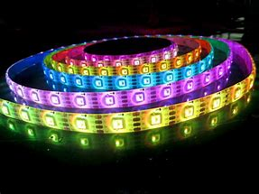

Kleurenled© 2018, ProtoIt Platform: ARDUINO |  |
Beschrijving:
Een kleurenled wordt met drie kleuren aangestuurd: rood, groen en blauw. Vandaar dat deze led´s ook wel RGB-led´s worden genoemd.
De kleurenled wordt op drie pwm-pinnen van de Arduino aangsloten. ´Pwm´ staat voor pulse-wide-modulation.
Dit is een speciale techniek waarmee een kleur harder of zachter kan worden gezet.
LET OP! Je mag een led niet rechtstreeks op de Arduino-pinnen aansluiten. Dan gaat de Arduino stuk.
Onderdelen:
Kleurenled
Instellingen:
| Pin rood | Het pin-nummer van de Arduino waarop je de rode ingang van de led aansluit. |
| Pin groen | Het pin-nummer van de Arduino waarop je de groene ingang van de led aansluit. |
| Pin blauw | Het pin-nummer van de Arduino waarop je de blauwe ingang van de led aansluit. |
| Rood (%) | Een waarde van 0 tot 100, die de lichtsterke van de rode kleur bepaalt. |
| Groen (%) | Een waarde van 0 tot 100, die de lichtsterke van de groene kleur bepaalt. |
| Blauw (%) | Een waarde van 0 tot 100, die de lichtsterke van de blauwe kleur bepaalt. |
| Start wanneer? | Als het ingevulde signaal optreedt, zal de led reageren. Standaard op het signaal Direct ingesteld. |
| Start wanneer? | Als het ingevulde signaal optreedt, zal de led niet meer reageren. Standaard op het signaal Nooit ingesteld. |